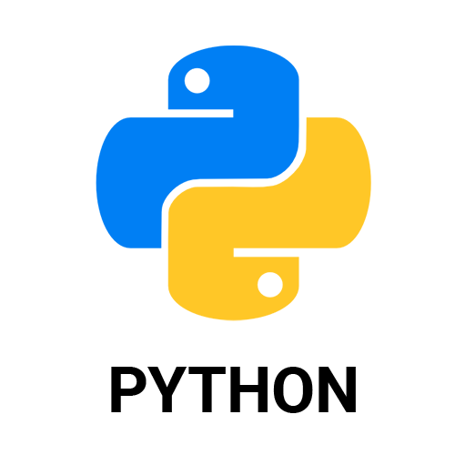
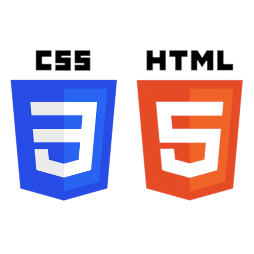

halállabirintus A feladat egy hasonló játékmechanikán alapszik mint például egy dungeons and dragons, csak klasszikusabb lapozgatós formában.  BMI A definíciója benne van a nevében. Ez a program kiszámítja a BMI-det és javasolja, hogy mi tévő legyél ha a program szerint egészségtelen vagy. csillagos ég A program egy randomizált mintában csillagokat alkot, szintén véletlenszerű pozíciókban.  1. weboldalam Ez volt az 1. úgymondd "nagyobb" weboldalam az egyik legkedveltebb videójátékomról. Megvannak a sajátos hibái és hiányosságai, de pont azért tudtam belőle tanulni. kutyus weboldal Ez a weboldal kutyusokról szól(egyik órai munkám rézse/házi feladatom). sakk weboldal Ez a weboldal sakkjátékosokról és a sakk történetéről szól(egyik órai munkám rézse).
 Munkáim
Munkáim